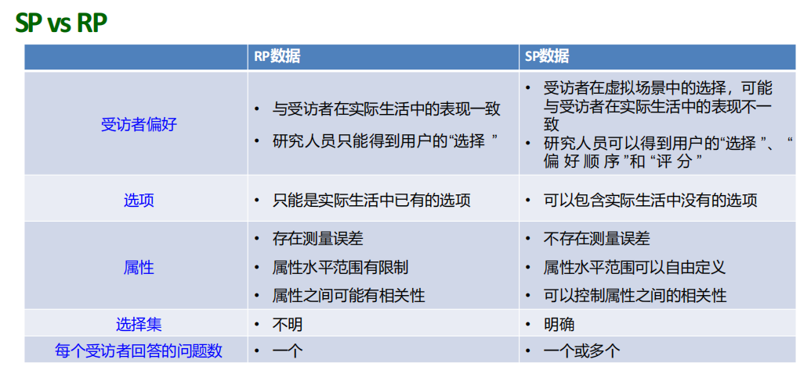
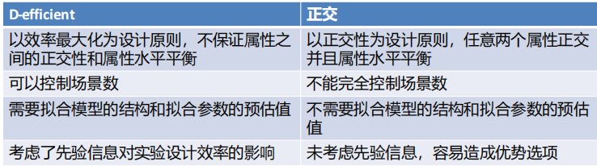

第二部分 交通行为调查
综述
- 常用交通调查方式:
- 定量: 直接观测, 居民出行调查, 拦截调查, SP调查.
- 定性: 访谈, 焦点小组, 德尔菲法(专家意见法).
- 常用抽样方法:
- 随机抽样: 简单随机抽样, 分层随机抽样,多阶段抽样, 整群抽样(聚类抽样), 系统抽样(机械抽样, 等距抽样).
- 非随机抽样: 基于选择的抽样, 定额抽样, 滚雪球抽样.
- SP与RP的区别
- RP调查: Revealed preference, 调查用户选择时做了什么.
- SP调查: Stated preference, 调查用户在选择时会做什么.

- SP实验结构:
- 第一部分: 受访者分块, 受访者现实出行行为.
- 第二部分: SP调查场景.
- 第三部分: 受访者的社会经济学特征与态度.
- SP实验场景:
- 背景描述.
- 选项.
- 属性配置. 用于描述每个选项的特点.
- 用户选择.
- 标签:
SP实验设计
- 选项, 属性, 属性水平的确定:
- 取决于研究目标.
- 不要过多或过少, 关键的选项或属性不可缺少.
- 避免过于主观, 模糊不清的属性.
- 属性水平的范围需合理, 选择好理解的属性水平.
- 场景数目的确定:
- 上限: 取决于受访者的忍耐程度, 通过预调查确定.
- 下限: (J−1)S≥K.
- J: 选项数量.
- S: 场景数.
- K: 属性数.
- 通过实验设计写效用函数: Ui=Ci+βij×选项.
- 注意 J 个选项最多 J−1 个常数项. 常数项表示选项的标签.
- 协变量: 受访者的属性.
- 数据收集方法:
SP调查统计设计
- 全因子设计: 包含所有属性水平组合的设计.
- 部分因子设计: 在全部场景中选择一部分展示给受访者.
- 随机设计: 随机选择.
- 正交设计: 保证设计变量之间正交.
- 效率设计: 使得拟合模型参数的标准差最小.
- 正交设计的概念:
- 两个属性之间无相关性.
- 每个属性水平的组合出现次数有相同.
- 实际情况下, 要求每两列之间不同数据对的出现次数相同.
- 正交设计的缺陷:
- 属性水平分布不均, 数据缺失, 分块缺失, 导致数据无法正交.
- 无标签SP难以处理优势选项.
- 所需要的场景数过多.
- 分块设计: 让每一个受访者回答所有场景中的一部分场景.
- 可以减小每一个受访者回答的问题数.
- 目标群体异质性明显时, 需要做分块设计.
效率设计
- 目的: 使模型拟合出的参数可信度更高, 即标准差更小.
- 评价指标:
- D-error: [det(Ω1)]K1.
- A-error: Ktr(Ω1), 即平均方差.
- Ω1: 费雪信息矩阵. K: 需要衡量的参数个数, 即 Ω1 的阶数.
- D-error 或 A-error 越小, 设计效率越高.

均匀设计
- 目的: 只考虑试验点在试验范围内均匀散布.
- 通过均匀表安排试验. 不考虑整齐可比, 大幅减少了试验次数.
- 特点:
- 每个因素在每个水平仅有1个实验点.
- 任意2个因素的组合仅出现一次.
- 适用范围:
- 试验因素变化范围较大, 需要取较多水平.
- 试验成本较高.
- 方法: 查询均匀设计表.